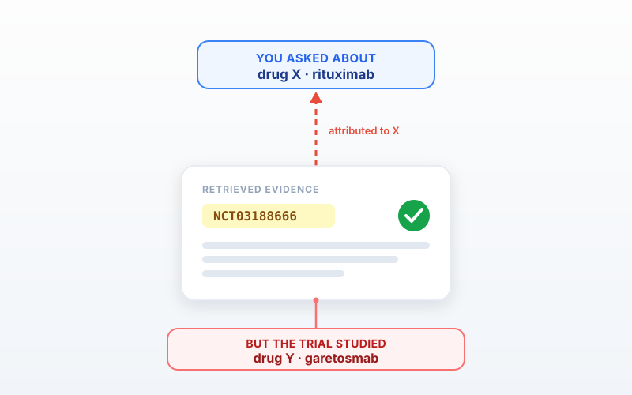

First-author preprint · 2026
Deceptive Grounding
Clinical RAG can relay real evidence, cite a genuine source, and still attribute that evidence to the wrong medical entity. Standard hallucination and faithfulness checks miss the failure.
New Failure Mode
13 models
740 production pairs
My contribution: I conceived and led the study from the initial failure observation through benchmark design, software, formal analysis, production validation, visualization, and writing.